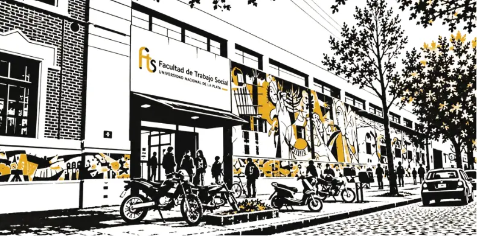
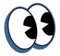

Salud
No como algo individual ni solo como enfermedad: las condiciones en las que se vive, se trabaja y se estudia deciden quién puede cuidarse y acceder. Equidad, desigualdad y la salud como derecho.
Agrupación Simón Bolívar · Conducción del CEFTS
-Voces que habitan-
De estudiantes para estudiantes

Cada mesa es un «Voces que habitan». Tocá Preguntar y dejá tu pregunta para quienes exponen: las que más apoyos tienen son las que se leen primero.
No es que cada carrera tome uno: son problemas que exceden a cualquier disciplina sola. Dejá tu aporte en el eje que quieras; sirven para armar las conclusiones del congreso.
No como algo individual ni solo como enfermedad: las condiciones en las que se vive, se trabaja y se estudia deciden quién puede cuidarse y acceder. Equidad, desigualdad y la salud como derecho.
No es solo un lugar en el mapa: es un espacio que se construye entre quienes lo habitan, con sus lazos, sus desigualdades, sus riesgos y sus formas de organizarse para transformarlo.
Las NTIC abren la accesibilidad y el derecho a la comunicación, y también pueden debilitar los lazos o deshumanizar la intervención. ¿Cómo usarlas sin reemplazar el encuentro ni la escucha?

Porque quienes transitamos la formación también producimos saberes: en las prácticas, en las instituciones y los territorios, en la militancia y en la propia vida universitaria. Un congreso pensado y organizado por estudiantes, y dirigido a estudiantes, es una apuesta por el protagonismo estudiantil en la Facultad.
En un contexto de ataque a la Universidad Pública y a las profesiones en las que nos formamos, discutir nuestras disciplinas, recuperar los saberes situados y construir la interdisciplina es una tarea colectiva.
En la FTS conviven Trabajo Social, Fonoaudiología y la Tecnicatura en Gestión Comunitaria del Riesgo. Encontrarnos antes del ejercicio profesional es ensayar lo que después nos va a pedir el territorio: dialogar con otros saberes, reconocer los límites de la propia disciplina y construir respuestas en conjunto. La interdisciplina que reclamamos para la intervención empieza a aprenderse en las aulas.
La voz es el lenguaje y la comunicación como derechos, y también tomar la palabra, ser escuchades e incidir en lo que nos afecta. Habitar es el territorio como algo que se construye: tejer vínculos, producir sentidos y transformarlo. Voces, en plural, porque ninguna disciplina sola alcanza para leer una realidad compleja.
Estudiantes, docentes, graduades y profesionales de las tres carreras, y público interesado de la región. Es presencial, con actividades, talleres y paneles con invitades. Hay certificado de asistencia con aval de la Facultad de Trabajo Social (UNLP).
Facultad de Trabajo Social, UNLP
Calle 9 esquina 63, La Plata.
¿Dudas? Escribinos a simonbolivarfts@gmail.com o por Instagram ↗.
 Organizan la Agrupación Simón Bolívar, conducción del CEFTS, y la
Facultad de Trabajo Social (UNLP).
Organizan la Agrupación Simón Bolívar, conducción del CEFTS, y la
Facultad de Trabajo Social (UNLP).